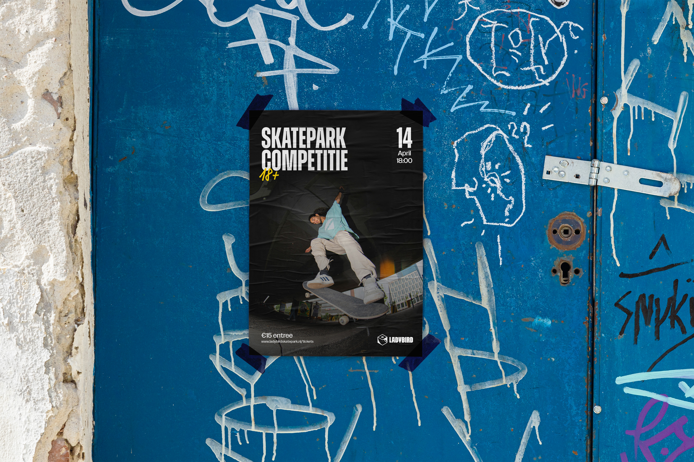
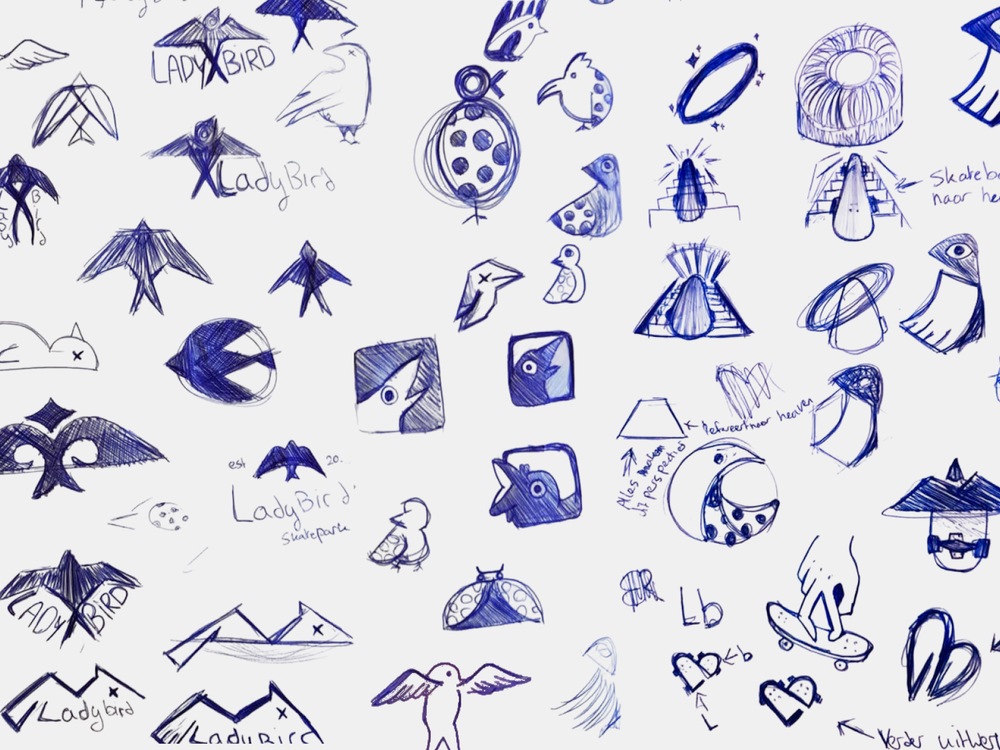
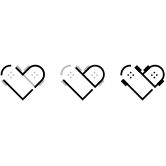
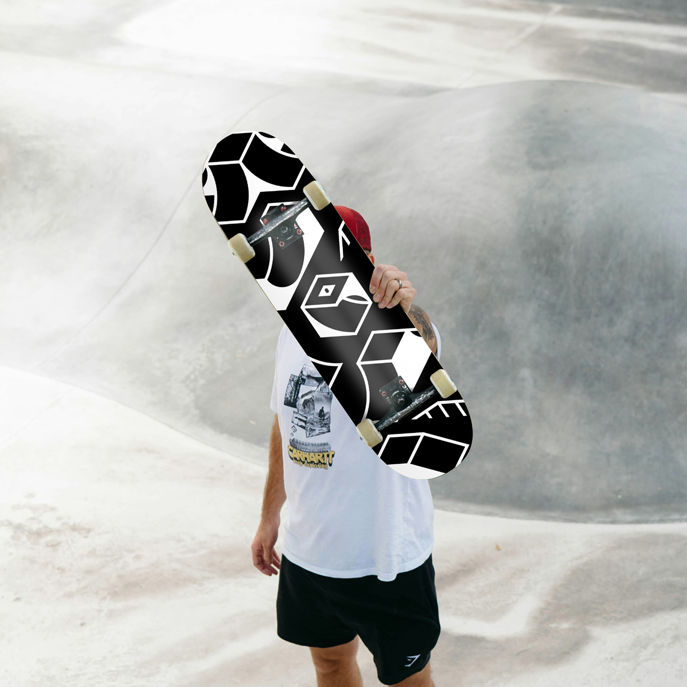

Next project
IPB Printing

Branding & Graphics
A rebrand concept for Ladybird Skatepark, where I turned an existing skate spot into a dynamic visual identity.


For the completion of my Crossmedia studie at SintLucas, I worked on a rebrand for Ladybird Skatepark during my internship at Gewest13 in 2025. As an established name in the skate scene, the project aimed to build a raw, dynamic, and versatile identity reflecting the energy of the park and street culture. Although the identity was not officially adopted by Ladybird Skatepark, the project served as a key showcase to demonstrate my final competencies for graduation.

Because the primary focus was finding the right logo mark, the exploration phase started on paper, where I produced over 20 pages of rough manual sketches. At this early stage, the focus was entirely on testing the fixed brief constraints, trying out many different creative directions and forms to see what felt right.

After narrowing down the strongest ideas from paper, I digitized six distinct logo concepts to test their viability in vector format. This phase focused on testing how each mark handled horizontal proportions, legibility at smaller scales, and the integration of the (lady)bird theme.
While Concept 3 stood out immediately as the strongest direction, it was not fully there yet in its initial digitized form. Through further iteration, fine tuning, and testing different icon variations built off the exact same ramp angle, inspired by quarterpipes and vert ramps, I developed an upgraded mark that fitted the brand significantly better. The iteration process paid off, resulting in a refined angled mark that successfully anchors the entire identity.


Once the core mark was finalized, the focus shifted to translating its geometric system into a cohesive visual language. The angle established by the ramp geometry became the underlying grid for all brand touchpoints that gives the identity a consistent and energetic look.
While the concept was not formally adopted by Ladybird Skatepark, the project successfully served as my capstone for SintLucas. It proved how a single geometric concept can be built out into a complete, scalable brand identity for a real-world client.
Next project